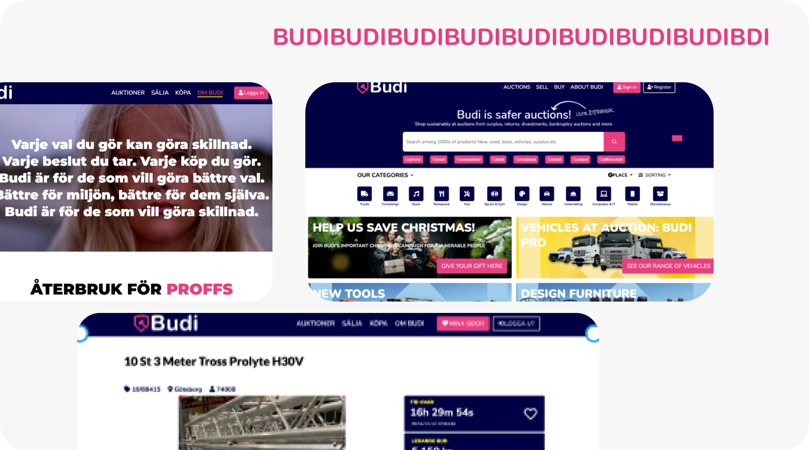
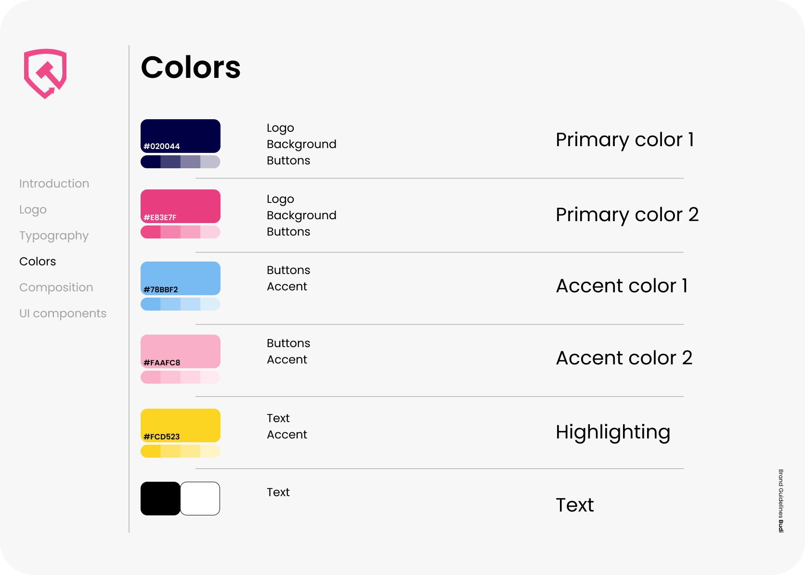
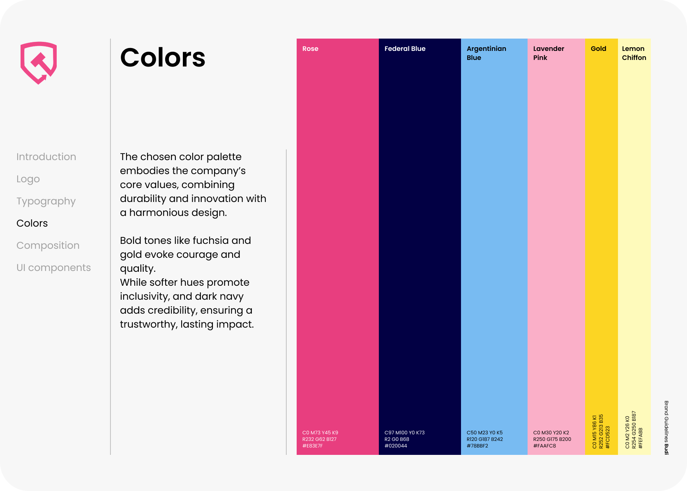
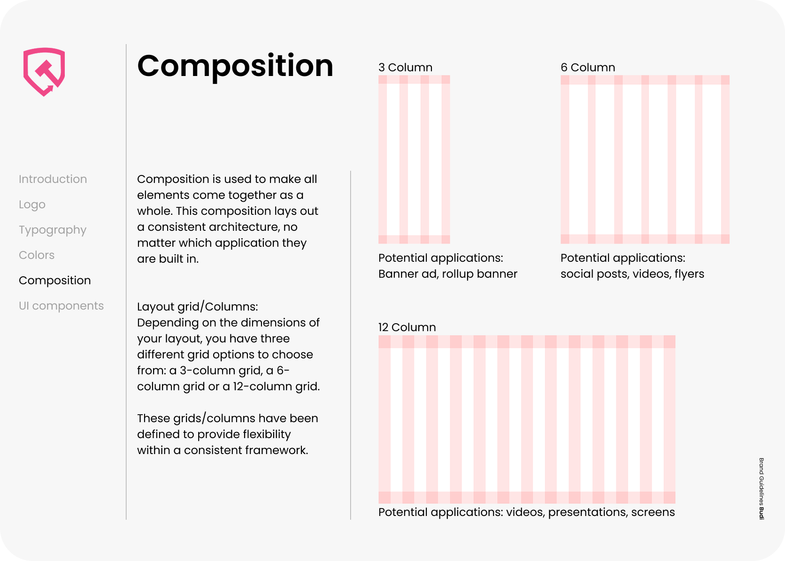
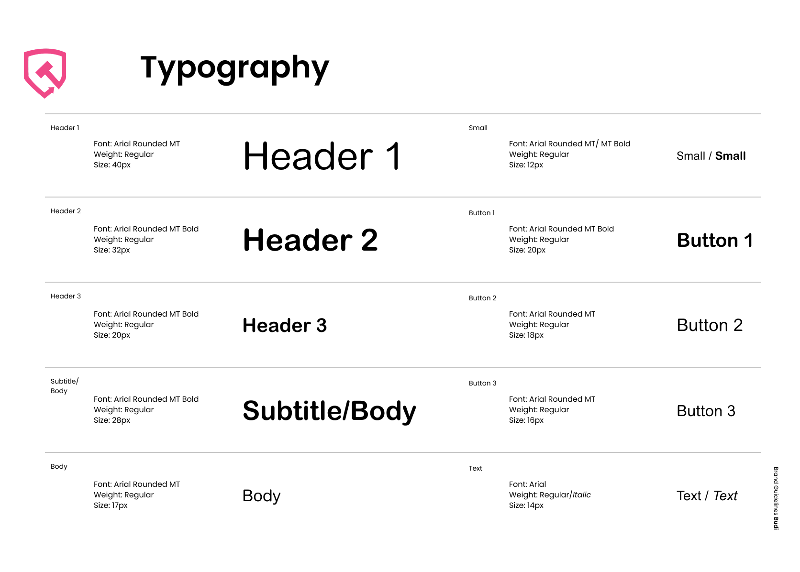

Budi
As a UI/UX Designer for Budi, I played a key role in shaping the brand's digital presence by developing a cohesive and user-friendly interface that aligned with its identity. My work involved designing an intuitive user experience, ensuring seamless navigation, and creating visually appealing layouts that enhance usability. I focused on consistency in branding, utilizing a modern and clean design system that strengthened Budi's recognition. Through typography, color schemes, and interactive components, I ensured that every design element contributed to a coherent and engaging digital experience. In collaboration with the team, I worked on wireframing, prototyping, and user testing, refining the UI based on insights and feedback.
Click any image to view larger.




@2x.png)
@2x.png)
@2x.png)


